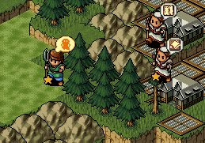
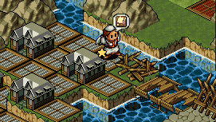
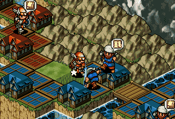
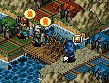
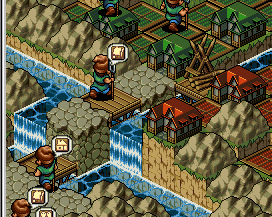

| 概要 | 情報 | ステージ攻略 |
| 地図 | テクニック | モナモナ攻略へ |
| 攻略すること自体はさほど難しくないのですが、よいスコアを出しすのは非常に難しいマップです。  怪獣の巣穴を壊した後、ユニットを上の画像の位置にある程度集めてください。ここに待機させたユニットが、白国の大将(体重が一番多いユニット)よりも体重が多くなれば、白国は自国の方へ攻め込まず、柵を壊し青国へ移動してくれます。  この時、うまくユニットの行動を管理して、白国の大将が気を変えて自国に攻め込もうとするのを阻止してください。 具体的に言うと、柵を壊している白国の大将の側に、大将よりも強い自国ユニットを置くようにしてください。  白国を制圧した頃、赤国と青国の優劣が付きます。とはいえ、この差は非常に微々たるもので、うまく自国が誘導しないと、侵攻はさほど速くなりません。 ちなみに管理人のプレーでは赤国が強くなることの方が多いです。 また、白国を征服する少し前から税率を上げて、今後の資金を集めてください。赤国が有利になった場合、橋を2つ作るので最低でも5000$ は欲しいところです。 これ以降は赤国有利の場合での説明をします。  まず、赤国の侵攻をできるだけ早めるために青国の大将を自国に張り付かせてください。上の画像のように柵を使うといいのですが、最後の最後まで突破されないように注意してください。  体重が3000g 程度のユニットが2体以上でき、かつ赤国が青国の城下に来たら、上の画像のように橋を作り赤国の城下に乗り込みます。その際、画像のように柵を作り赤国の資金源を断つようにしてください。 後は赤国の城下を制圧し、城を壊してください。城を壊した後は、青の土地を慎重に埋めて占領率100% にしてください。 |
| 概要 | 情報 | ステージ攻略 |
| 地図 | テクニック | モナモナ攻略へ |